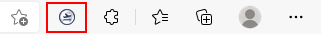
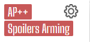

Thanks for installing this extension! We worked really hard on this extension to make it easy to use, but there's one thing we need you to do!
This extension uses a special permission in the chrome world called
tabs, which allows us to add userscripts directly to GeoFS.
More infomation on how we use this permission can be found here.
In order for this extension to work, we need you to grant us the tabs permission. Here's how to do that:
To change your preferences, click on the GeoFS icon on the top right of your screen.
You will see something like this:
Click on the button, and play around! We've made the UI intuitive to understand.
Open GeoFS, and play around with the popup! You'll see that GeoFS updates with your preferences!
If you use spoiler arming, remember to use Shift + your spoiler preference (defaults to B) to arm the spoilers!